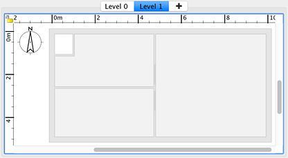
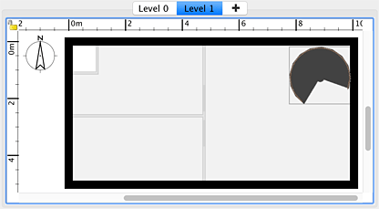

Chaque logement est créé avec un niveau par défaut, mais Sweet Home 3D est aussi capable de gérer plusieurs niveaux, avec la possibilité pour chaque niveau d'être au dessus ou en dessous du sol. Pour ajouter un nouveau niveau, choisissez le menu Plan > Ajouter un niveau. Aussitôt que le logement comporte plus d'un niveau, des onglets apparaissent au dessus de la vue du plan pour vous permettre de sélectionner le niveau auquel vous voulez ajouter des objets. Le dernier onglet contient un signe + sur lequel vous pouvez cliquer aussi pour créer des niveaux supplémentaires si besoin.
|  |
| Nouveau niveau montrant en couleur claire les murs et les plafonds du niveau inférieur |
Pour vous aider à vous retrouver dans le niveau supérieur, les murs et les plafonds du niveau inférieur sont en couleur claire dans la vue du plan. Si le niveau en cours d'édition est le plus bas, ce sont alors les murs et les planchers du niveau au dessus qui seront dessinés en couleur claire. Quand le magnétisme est actif, le curseur de la souris est magnétisé sur ces murs et ces pièces pour vous simplifier l'utilisation des outils de dessin des murs et des pièces. Si besoin, vous pouvez aussi copier des murs, des pièces ou des meubles d'un autre niveau pour les coller dans le nouveau niveau.
Chaque niveau a une élévation et d'autres attributs qui peuvent être modifiés. Si le haut des murs et des meubles ajoutés à un niveau inférieur est plus élevé que l'élévation du niveau sélectionné, ils apparaîtront alors en couleur normale, comme les murs extérieurs, l'escalier en colimaçon et la fenêtre à droite dans la figure suivante.
|  |
Nouveau niveau montrant en couleur normale les murs et meubles élevés du niveau inférieur |
L'ajout d'un nouveau niveau n'a aucun effet direct dans la vue 3D, et aucun plancher n'est ajouté automatiquement pour séparer un niveau d'un autre. Ca n'est qu'à partir du moment où vous commencez à y dessiner des murs, des pièces et y ajouter du mobilier que vous verrez apparaître ces nouveaux objets à l'élévation du nouveau niveau. |